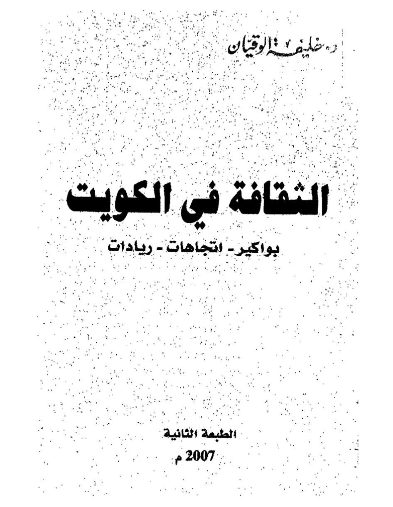

صدر عام ٢٠٠٧ (الطبعة الثانية) · صفحات من كتاب د. خليفة الوقيان، الثقافة في الكويت: بواكير، اتجاهات، ريادات، الطبعة الثانية، ٢٠٠٧م
عيسى القطامي كاتبا ومصلحا و«الربان الشهير»، ومعه عبدالوهاب وناصر وجاسم وعبدالرحمن، في «الثقافة في الكويت» للوقيان
ما هي
كتاب في تاريخ الثقافة في الكويت. تذكر الصفحة ٤١ عيسى القطامي بين ذوي الثقافة المدنية من الشباب المجددين في مطلع النهضة الأولى. وتذكر الصفحات ٥٦ و١١٥ و٣٣٢ كتبه الثلاثة: «دليل المحتار في علم البحار» و«المختصر الخاص للمسافر والطواش والغواص» و«الخالص من كل عيب لوضع الجيب»، «وهي من تأليف الربان الشهير عيسى القطامي»، وقد طبع الأولان في بغداد سنة ١٣٤٣هـ (١٩٢٤م)، ثم أعادت مطبعة الكويت طبع «المختصر» وأبقت على الغلاف تاريخ الطبعة الأولى. وتعد الصفحتان ١٥٨ و١٥٩ «المرحوم عيسى القطامي» ممن وقف إلى صف الشاعر صقر الشبيب، وتنقل الصفحتان ١٦٤ و١٦٥ زهيرياته في الضيق بالمتزمتين، وتذكران أنه «هجر الكويت في سنوات عمره الأخيرة واستقر في مسقط حتى وفاته فيها في العام ١٩٢٩م، بسبب ضيقه بالتزمت والمتزمتين كما يبدو». وتنقل الصفحة ١٢٢ قول الربان عبدالوهاب بن عيسى القطامي عن «الجو»، وتذكر الصفحة ٣٣٠ كتابه «الصيد والتنقل والتجارة» (١٩٦٤م). وتذكر الصفحة ٥٩ روزنامة النوخذة ناصر عبدالوهاب القطامي بين الروزنامات المنشورة. وتذكر الصفحة ٢٤٧ قصة «نهاية بحار» لجاسم القطامي في البعثة، أغسطس ١٩٤٨م. وتنقل الصفحة ٢٧٣ قول أحمد البشر الرومي إنه كان مع عبدالرحمن القطامي في شوارع بومبي.
أهميتها
كتاب مرجعي في تاريخ الثقافة الكويتية يضع عيسى بين المصلحين والكتاب في عصره، ويذكر سببا لانتقاله إلى مسقط، ويوثق كتابة ابنه عبدالوهاب وروزنامة ناصر وقصة مبكرة لجاسم.
صور الصفحات


ملاحظات
نعرض هنا الصفحات الأولى فقط، ويرى أفراد العائلة بعد تسجيل الدخول كل الصفحات وعددها 16.
أسماء أخرى
المصادر
د. خليفة الوقيان، الثقافة في الكويت: بواكير، اتجاهات، ريادات، الطبعة الثانية، الكويت، ٢٠٠٧م، ص ٤١ و٥٦ و٥٩ و١١٥ و١٢٢ إلى ١٢٤ و١٥٨ و١٥٩ و١٦٤ و١٦٥ و٢٤٧ و٢٧٣ و٣٣٠ و٣٣٢
كيف كُتب هذا النص: سبب انتقال عيسى إلى مسقط تقدير من المؤلف («كما يبدو»). ولا يحدد الكتاب أي عبدالرحمن القطامي كان مع أحمد البشر، وقد رُبط بعبدالرحمن بن عبدالعزيز الذي يرد في يوميات البشر.
افتح في الموقع التفاعلي